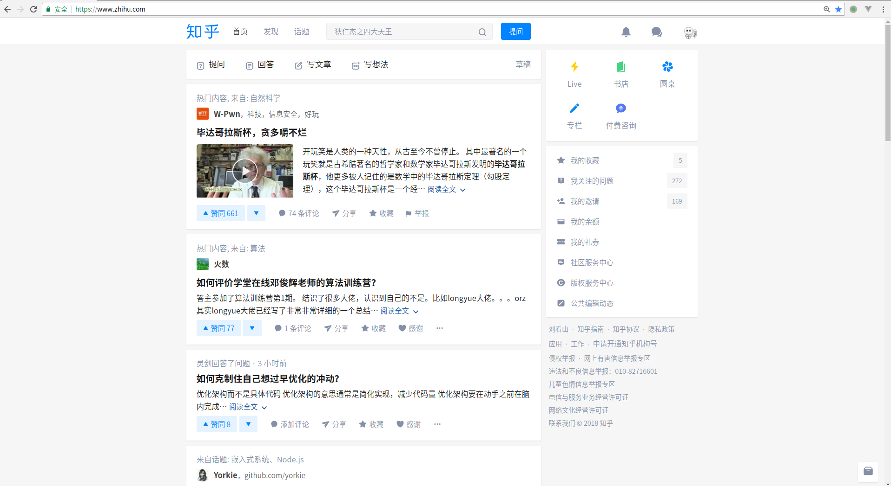
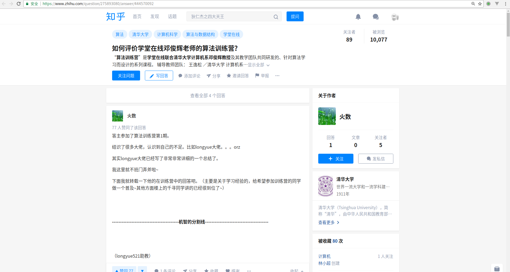

浅谈SPA,SEO,SSR
前后端分离算是最近Web开发的大趋势，目前已经有大量的公司使用类前后端分离的开发方式。那我们就来大概谈谈前后端分离开发中必须要了解和接触的几个概念：SPA、SEO和SSR。在谈着几个概念之前，先来聊聊我理解的前后端分离。
我理解的前后端分离
背景
最开始接触web前后端分离在将公司旧的项目进行重构，另外我们的项目还有移动端，所以后端除了提供数据渲染web前端的页面以外还得给移动端提供接口，实际上两端的数据大多都是相同的。
传统的web前后端开发大多是前端将页面写好，之后丢给后端，让后端将页面集成到项目中去。这里就存在这一个前后端耦合的问题，首先对于后端来说，不仅要写后端逻辑，还得集成前端页面（要是页面哪里再有啥问题就更悲催了，都是泪啊~~），而对于前端来说，不是很轻松地就能看到页面的真正渲染出来的样子，显示是不利于开发调试的，这里的效率自然也成了问题。
也正是由于前后端的高耦合，使得任何一方的变化都会影响到另一方。
针对类似于上述的一些问题，前端端分离的思想遍应运而生。
基本概念
前后端根据AJAX接口进行数据的交互，目前常见的前后端直接将数据以JSON的格式返回给前端，前端根据后端服务器返回的数据，操作DOM。
主要优点
- 分工明确，前后端各司其职，后端专注业务逻辑和功能的实现，前端专注页面设计。
- 接口明确，并行开发，在后端接口没有实现好之前，前端完全可以自己通过Node.js的Express和koa等的web框架模拟接口，提供测试数据。
- 提高开发效率，一定程度上减少了前后端的
沟通成本撕逼。
在前后端分离中，后端一般提供RESTful API，常将数据以JSON格式返回；而前端一般使用什么呢，这里便是引出了我们讨论的主题之一：SPA。
SPA
概述
SPA全称是single page application（在百度百科和一些文章中使用的是single page web application，经过一番查询了解，我觉得single page application才应该是它的全称）。
SPA是一种网络应用程序（WebApp）模型。在传统的网站中，不同的页面之间的切换都是直接从服务器加载一整个新的页面，而在SPA这个模型中，是通过动态地重写页面的部分与用户交互，而避免了过多的数据交换，响应速度自然相对更高。
举个例子，请看知乎首页:

在知乎Web页面中，一些部分是几乎不会发生改变的，比如导航栏，当我们点了某一个问题进入之后

它的导航栏依然不会有什么变化，而在传统的Web网站中，进入了新的页面，会从服务器请求完整的一整个页面，而在SPA中，当切换到新的页面，只需要重写页面发生了变化的部分。